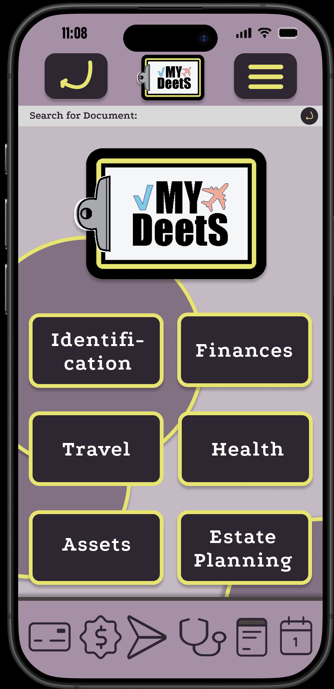
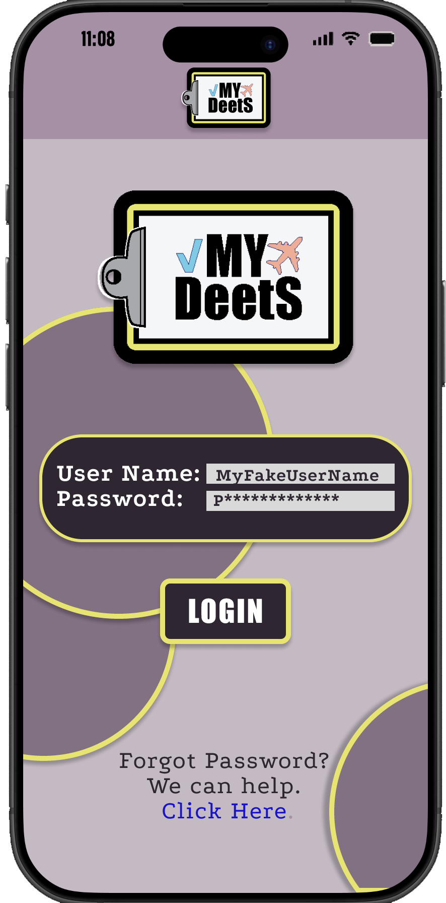
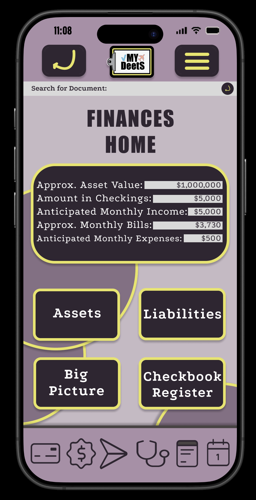
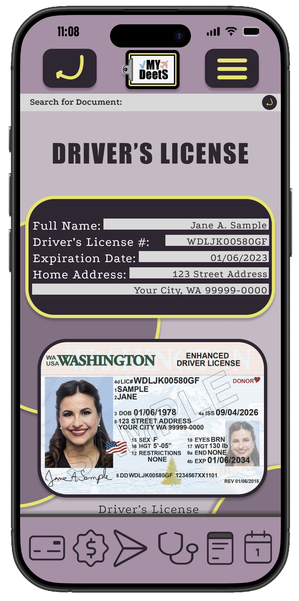
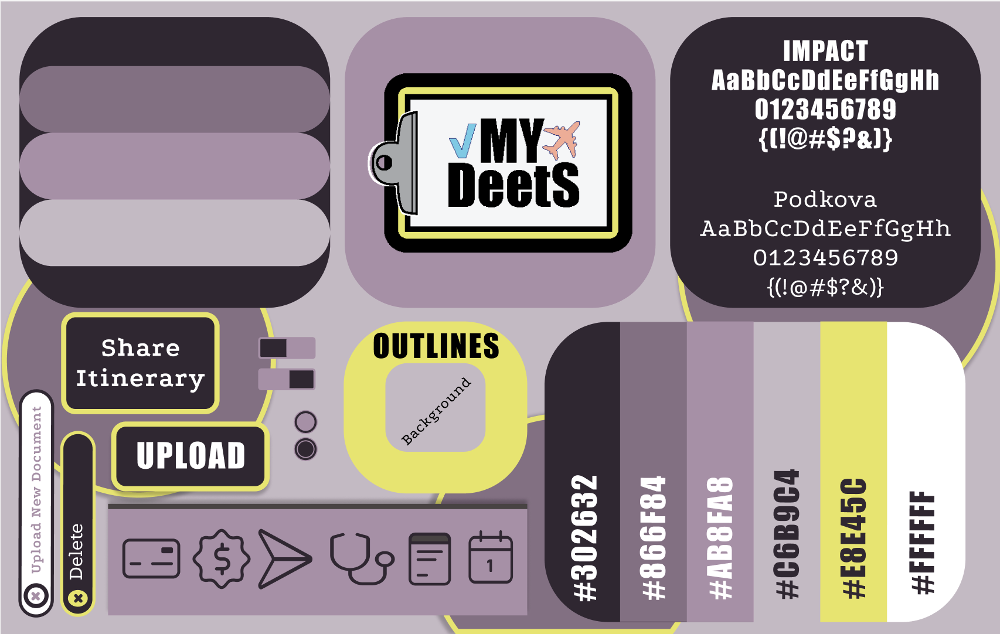
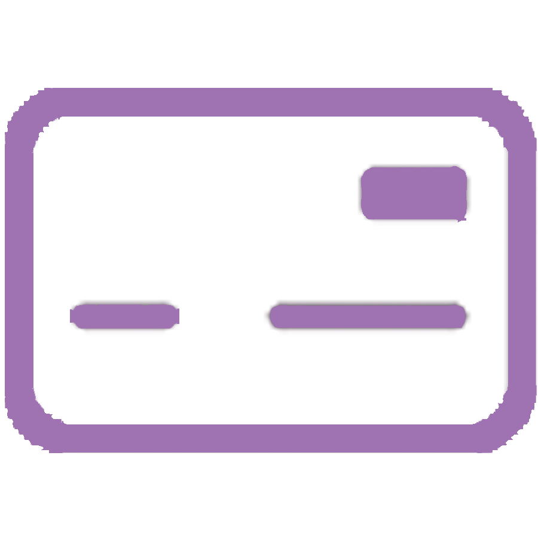
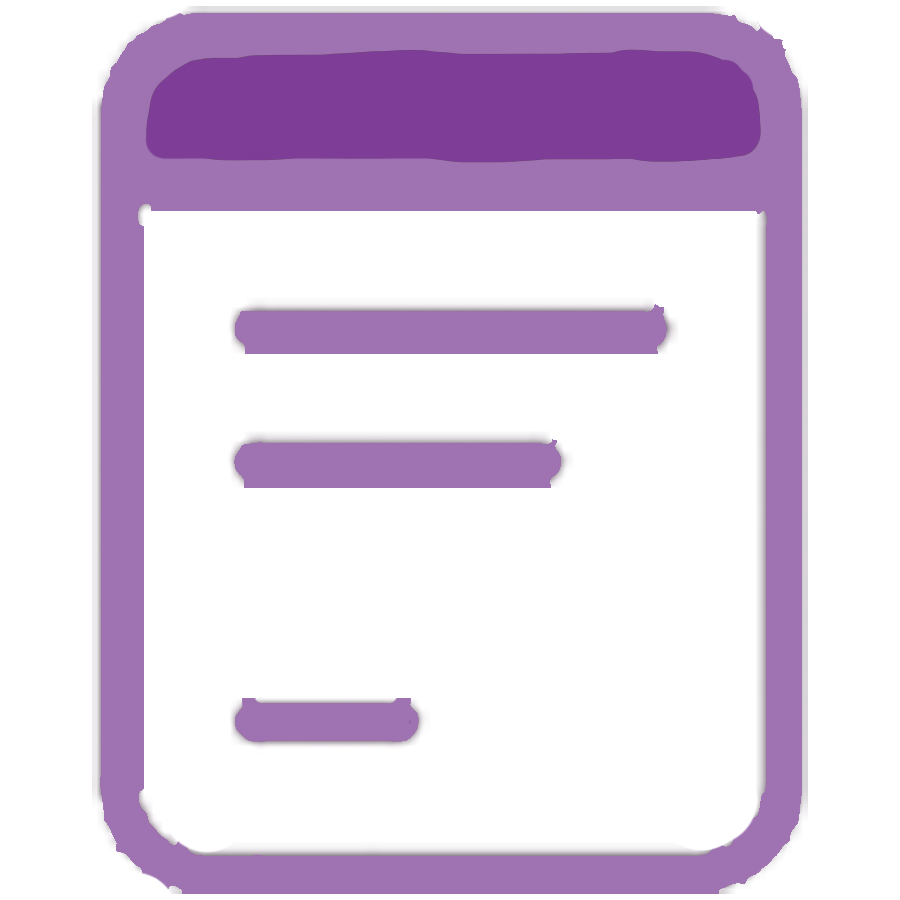
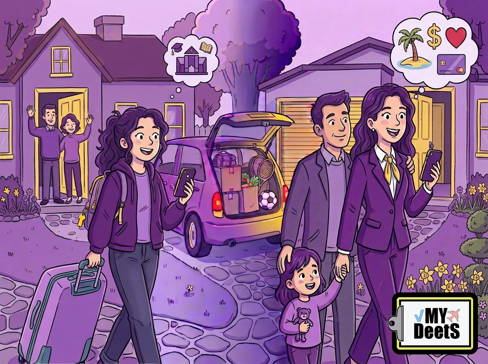
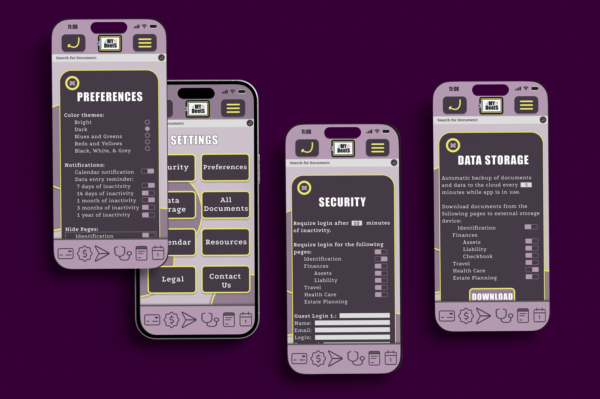

01 / THE DASHBOARD
A clearer place to start.
The home screen acts as the central hub, helping users orient themselves and find the information they need without navigating an overwhelming list of records.
Figma
Adobe Photoshop
UI/UX Design
Visual Design
Prototype Development
App Concept
Design System
High-Fidelity Prototype
Envato Elements assets
Third-party mockups
PERSONAL ORGANIZATION · UX/UI DESIGN
My Deets is a conceptual mobile app designed to bring life's important information together in one organized, accessible place.
From identification and everyday expenses to assets, liabilities, and important records, the app provides a flexible foundation that can grow alongside its users.
Explore the experienceEXPLORE THE APP
Explore the high-fidelity Figma prototype to see how the app brings different areas of personal organization into one connected experience.
VIEW INTERACTIVE PROTOTYPE
EXPLORE THE PROTOTYPE ↗DESIGNED AROUND REAL LIFE
A clear starting point, dedicated spaces for financial information, and convenient access to important personal records make a complex system easier to navigate.

01 / THE DASHBOARD
The home screen acts as the central hub, helping users orient themselves and find the information they need without navigating an overwhelming list of records.

02 / FINANCIAL ORGANIZATION
Dedicated financial sections provide a place to organize information about spending, assets, liabilities, and financial resources as users' needs become more complex.

03 / PERSONAL RECORDS
Identification and other essential records have a dedicated place within the larger organizational system, rather than getting lost among unrelated information.
THE VISUAL LANGUAGE
A cohesive visual system makes a broad range of information feel like part of the same experience. Rounded forms, color-coded elements, approachable typography, and reusable components help bring consistency to the interface.
Purple establishes the visual identity, while contrasting yellow accents add energy and help important elements stand out.

THE DETAILS THAT MAKE UP A LIFE
Distinct categories help users organize everyday
essentials
alongside the information they may need
later in life.

Keep payment-related information organized.
Bring everyday finances and financial records together.
Keep travel-related details within easy reach.
Organize important health-related information.

Give important personal records a dedicated home.
Keep track of dates and important reminders.
ONE APP. A LIFETIME OF DETAILS.
My Deets is designed around the idea that personal organization changes as life changes. Users can begin with the essentials and build toward a more complete picture of their lives.

DESIGNED TO GROW WITH YOU
New experiences bring new information to manage. My Deets offers a flexible foundation for organizing important details as priorities, responsibilities, and financial needs evolve.
The essentials
Identification, travel details, everyday spending, and the records that support greater independence.
More to manage
Income, expenses, insurance, important documents, and the growing responsibilities of adult life.
The bigger picture
Property, investments, accounts, liabilities, and estate-planning information as needs evolve.
YOUR INFORMATION. YOUR CONTROL.
Organization is only part of the experience. Settings give users ways to manage their preferences, control access to selected information, and decide how the app fits their needs.
The result is a more flexible experience—one designed to accommodate different priorities as users' lives and responsibilities change.

Big life. Important details. One place to start.
CONTACT ME